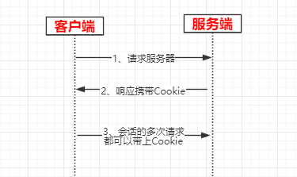
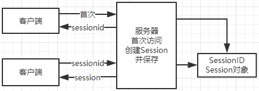
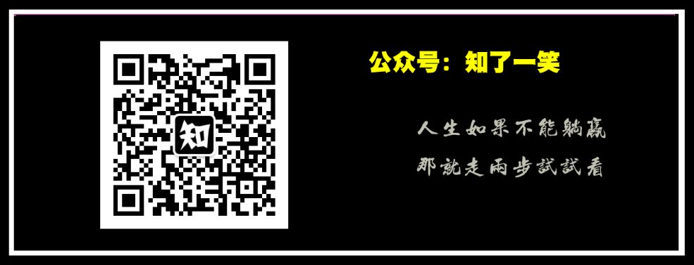

本文源码：GitHub·点这里 || GitEE·点这里
比如登录某个购物网站，身份识别成功后，在网站下单，支付 等操作，这些操作中当前登录用户信息必须是共享的，这样这些操作结果才能和登录用户做关联。
可以把会话理解为客户端与服务器之间的一次交互，在一次交互中可能会包含多次请求和响应。在JavaWeb中，从客户端向服务器发出第一个请求开始，会话就开始了，直到客户端关闭浏览器会话结束。在一个会话的多个请求中共享数据，这就是会话跟踪技术。
Cookie在HTTP中通常是用来辨别用户身份，进行会话跟踪而储存在用户本地终端上的数据，一般会加密处理，由用户客户端计算机暂时或永久保存的信息。其结构就是一个键和一个值构成的。随着服务器端的响应发送给客户端浏览器。然后客户端浏览器会把Cookie保存起来，当下一次再访问服务器时把Cookie再发送给服务器。

Cookie是由服务器创建，然后通过响应发送给客户端的键值对。客户端会保存Cookie，并会标注出Cookie的来源。当客户端向服务器发出请求时会把Cookie包含在请求中发送给服务器，这样服务器就可以识别客户端。
JavaWeb中，可以基于Servlet创建Cookie，并设置属性。
public class CookieServletOne extends HttpServlet {
@Override
protected void doGet(HttpServletRequest request, HttpServletResponse response)
throws ServletException, IOException {
response.setContentType("text/html;charset=utf-8");
// 创建Cookie
Cookie cookie = new Cookie("author","cicada");
// 设置生命周期 1小时
cookie.setMaxAge(60*60);
response.addCookie(cookie) ;
response.getWriter().print("Hello:Cookie");
}
}访问：http://localhost:6002/cookieServletOne
查看响应头：
Response Header
Set-Cookie: author=cicada; Max-Age=3600;这样，服务器创建的Cookie在客户端就拿到了。
public class CookieServletOne extends HttpServlet {
@Override
protected void doPost(HttpServletRequest request, HttpServletResponse response)
throws ServletException, IOException {
System.out.println("doPost...");
Cookie[] cookies = request.getCookies() ;
for (Cookie cookie:cookies){
System.out.println("Name："+cookie.getName());
System.out.println("Value："+cookie.getValue());
}
response.setContentType("text/html;charset=utf-8");
String userName = request.getParameter("userName") ;
response.getWriter().print("Hello:"+userName);
}
}通过测试，控制台输出：Name：author;Value：cicada。
更新就是指Cookie的覆盖，如果服务器端发送重复的Cookie那么会覆盖原有的Cookie。
public class CookieServletTwo extends HttpServlet {
@Override
protected void doGet(HttpServletRequest request, HttpServletResponse response)
throws ServletException, IOException {
response.setContentType("text/html;charset=utf-8");
// 创建Cookie
Cookie cookie = new Cookie("author","smile");
// 设置生命周期 2小时
cookie.setMaxAge(60*60*2);
response.addCookie(cookie) ;
response.getWriter().print("Hello:Cookie");
}
}可以通过上面方法测试Cookie的获取结果。
cookie.setMaxAge(0)：生命等于0是一个特殊的值，它表示cookie被作废。
public class CookieServletTwo extends HttpServlet {
@Override
protected void doPost(HttpServletRequest request, HttpServletResponse response)
throws ServletException, IOException {
response.setContentType("text/html;charset=utf-8");
Cookie[] cookies = request.getCookies() ;
for (Cookie cookie:cookies){
if (cookie.getName().equals("author")){
cookie.setMaxAge(0);
response.addCookie(cookie);
}
}
String userName = request.getParameter("userName") ;
response.getWriter().print("Hello:"+userName);
}
}这样再测试Cookie的获取方法，发现上面删除的Cookie就没有了。
设置 cookie 过期的时间，秒为单位。默认情况cookie 只会在当前 session 会话中有效。
获取 cookie 的最大生存周期。
获取 cookie 的名称。名称在创建后不能改变。
获取与 cookie 关联的值。
设置与cookie关联的value值。相同的name多次设置会覆盖。
会话管理，当用户在应用程序的Web页之间跳转时，存储在Session对象中的变量将不会丢失，而是在整个用户会话中一直存在下去。Servlet中可以把一个会话内需要共享的数据保存到HttSession对象中。四大域对象：PageContext、ServletRequest、HttpSession、ServletContext。

首次使用session时，服务器端要创建session，session是保存在服务器端，数据是保存在session中，sessionId通过Cookie发送给客户端，且只在浏览器本次会话中存在，也就是说如果用户关闭了浏览器，那么这个Cookie就丢失。
客户端再次访问服务器时，在请求中会带上sessionId，服务器会通过sessionId找到对应的session，而无需再创建新的session。
当一个session长时间没人使用的话，服务器会把session删除了，这个时长在Tomcat中配置是30分钟，可以在${CATALANA}/conf/web.xml找到这个配置，也可以在的web.xml中覆盖这个配置！
<session-config>
<session-timeout>30</session-timeout>
</session-config>当前会话已经存在session对象那么直接返回，如果当前会话还不存在，创建session对象并返回 。
返回该 session 会话中具有指定名称的对象 。
分配给该 session 会话的唯一标识符的字符串。
使用指定的名称绑定一个对象到该 session 会话。
从该 session 会话移除指定名称的对象。
在网站中，经常可见的一个功能就是上次登录时间，这个功能基于Session可以很便捷的实现。
public class SessionServletOne extends HttpServlet {
@Override
protected void doGet(HttpServletRequest request, HttpServletResponse response)
throws ServletException, IOException {
response.setContentType("text/html;charset=utf-8");
SimpleDateFormat dateFormat = new SimpleDateFormat("yyyy-MM-dd HH:mm:ss");
HttpSession session = request.getSession(true) ;
Date createTime = new Date(session.getCreationTime());
Date lastAccessTime = new Date(session.getLastAccessedTime());
session.setAttribute("author","cicada");
response.getWriter().print(
"SessionId：" + session.getId() + "<br/>"+
"User Author：" + session.getAttribute("author")+"<br/>"+
"Create Time：" + dateFormat.format(createTime)+"<br/>"+
"Last Access Time："+dateFormat.format(lastAccessTime));
}
}访问http://localhost:6002/sessionServletOne
页面打印，多次访问，查看效果。
SessionId：40C12C367CBFA7469D57E72C5C091300
User Author：cicada
Create Time：2019-12-14 15:34:10
Last Access Time：2019-12-14 15:35:13GitHub·地址
https://github.com/cicadasmile/java-base-parent
GitEE·地址
https://gitee.com/cicadasmile/java-base-parent